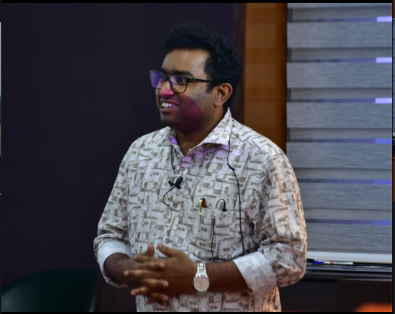
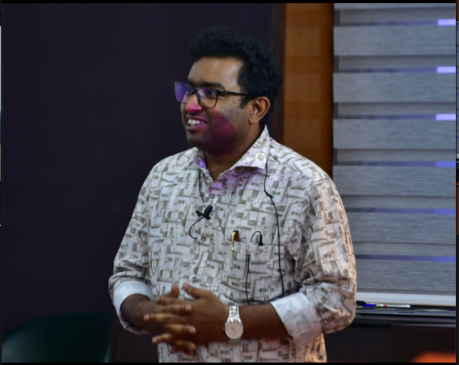

About Me
Welcome to my webpage! I am an Applied Cryptography Researcher and Assistant Professor at the School of Data Science, IISER Thiruvananthapuram. I received my Ph.D. in Computer Science with a specialization in Searchable Encryption. My research focuses on secure and efficient solutions for secure cloud computing, data privacy, and encrypted graph analytics, combining theory with real-world prototype implementations. I enjoy teaching. My current research focus includes blockchain foundations, particularly Ethereum and its Layer-2 technologies, as well as post-quantum cryptography.
 

Assistant Professor
IISER Thiruvananthapuram
Latest News
- Paper titled "Efficient and Post-Quantum Conjunctive Dynamic SSE with Strong Privacy Guarantees" accepted at PKC 2026.
- Delivered an invited talk on "Mitigating Randao Manipulation: Is VDF the Missing Link?" at Crypto Winter School (CWS) 2025, IIT Bhilai.
- Served as Co-organizer of AI for Science; AI Impact Pre-Summit Event, under IndiaAI Mission, IISER.
- Member of Organizing Committee, 3rd Frontiers Symposium in Data Science, IISER.
- Delivered a talk on "Consensus and Blockchain" at CREST Crypto Summer School (CCSS) 2025, TCG CREST.
For contact information and office details, please visit my official IISER TVM webpage .